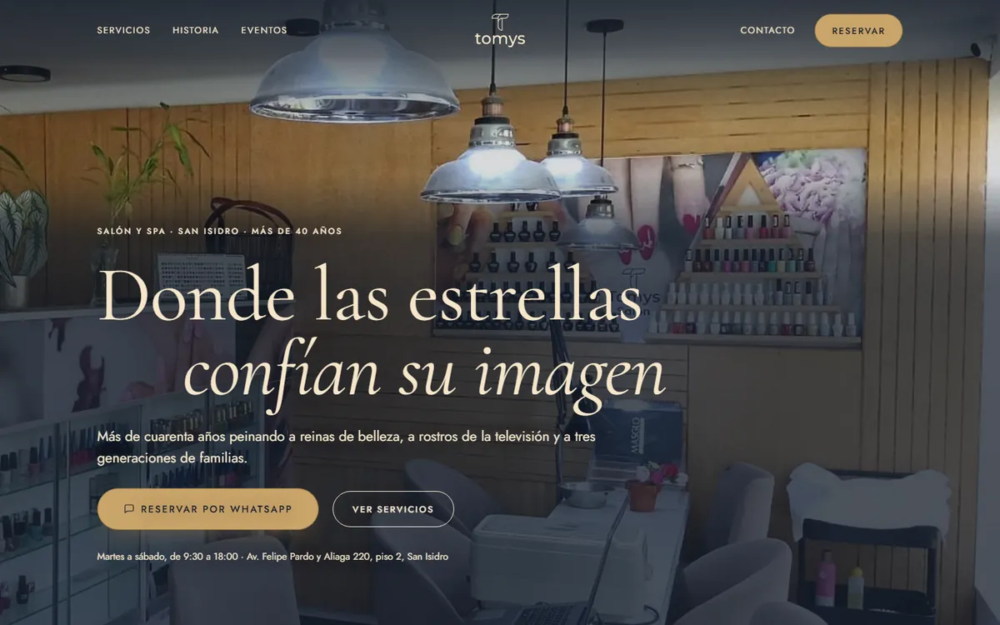
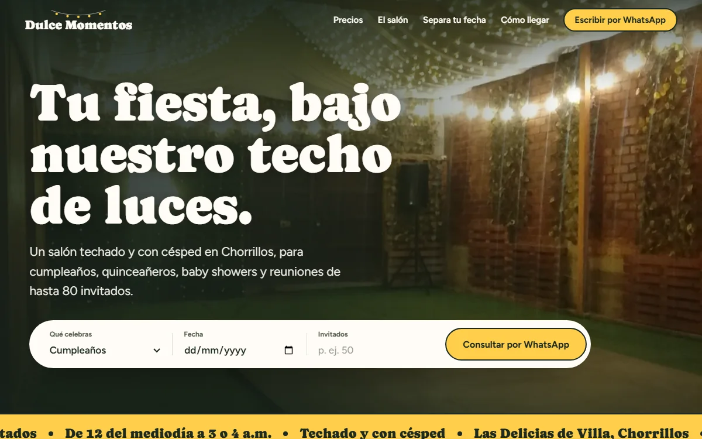
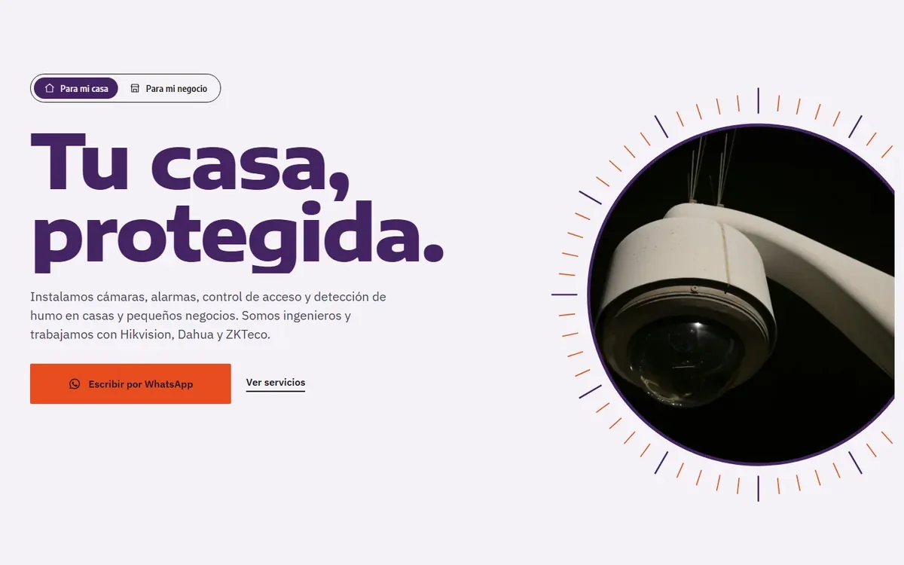
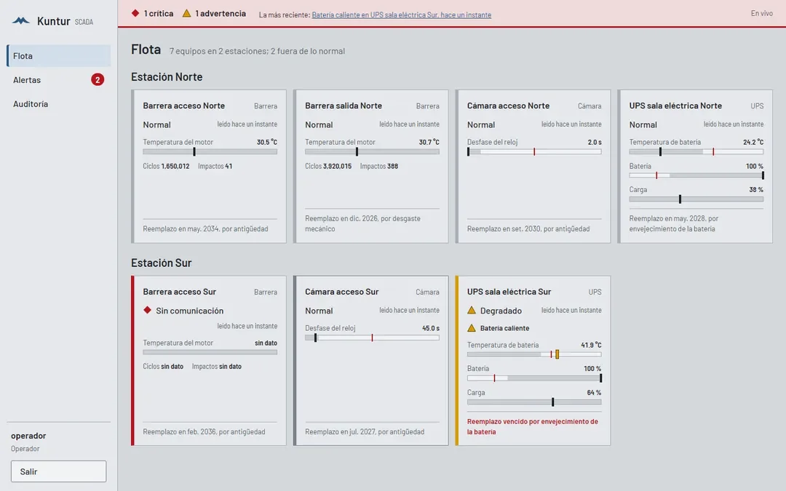
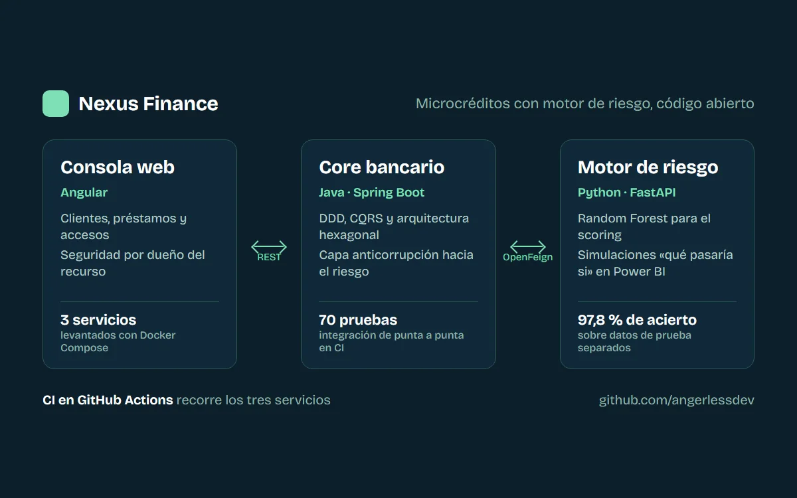

Landing page que convierte
desde S/ 900
Una página para un servicio o una campaña: se ve bien en el celular, botón de WhatsApp, formulario que te avisa al instante, SEO básico y medición de visitas.
Publicada en 5 a 7 días
Angel Cancho, ingeniero de software en Lima
Landing pages, webs y automatizaciones para negocios en Lima. Las hace un ingeniero que mantiene en producción una plataforma que vigila más de 500 equipos, así que lo que te entrego funciona el lunes y también el mes siguiente.
Respondo el mismo día. Trabajo con recibo por honorarios.
Precios referenciales en soles, con recibo por honorarios. El precio final se cierra antes de empezar y no cambia.
desde S/ 900
Una página para un servicio o una campaña: se ve bien en el celular, botón de WhatsApp, formulario que te avisa al instante, SEO básico y medición de visitas.
Publicada en 5 a 7 días
desde S/ 1,500
Hasta cinco secciones: inicio, servicios, sobre ti, galería y contacto. Dominio y hosting a tu nombre, para que la web sea tuya.
En 2 a 3 semanas
por cotización
Reportes que se envían solos, alertas por WhatsApp y conexiones entre tu web y tus sistemas: hojas de cálculo, SharePoint, APIs de terceros.
Alcance y plazo por escrito
desde S/ 80 al mes
Cambios menores, respaldo mensual y hosting vigilado. Si algo se cae, me entero antes que tú.
Sin permanencia
Landings para negocios de Lima y sistemas que hoy están en producción. Cada caso dice en qué estado está.

Lista para publicar Salón y spa, San Isidro
Landing para reservar por WhatsApp, con diseño propio en Figma y su sistema de diseño, construida en Astro con imágenes AVIF y WebP. Lighthouse 100 en escritorio y 93 en celular; cero violaciones WCAG 2.1 AA en la auditoría con axe.

Salón de fiestas, Chorrillos
Landing donde el cliente elige qué celebra, la fecha y los invitados, y consulta por WhatsApp con el mensaje ya escrito. Lighthouse 100 en celular en rendimiento, accesibilidad y buenas prácticas, con LCP de 1,3 s.

Seguridad electrónica, Lima
Landing con dos rutas, casa y negocio, y una portada donde la lente de una cámara se abre con el scroll. Diseñada en Figma con componentes y estados; incluye un panel para que el dueño suba las fotos de sus trabajos sin depender de nadie.
En producción desde enero de 2026 Lima Expresa (VINCI Highways)
Plataforma que vigila más de 500 equipos de 9 tipos de la red de peajes: barreras, antenas RFID, cámaras, UPS y PC. Backend en Python/FastAPI con arquitectura hexagonal, frontend en Angular, SQL Server y alertas en tiempo real por WebSocket y WhatsApp. Es un sistema interno, así que no muestro capturas.
En producción desde octubre de 2026 Lima Expresa (VINCI Highways)
App para que los operadores registren incidencias dictando por voz, incluso sin señal, con un panel web para supervisores. Flutter, Python/FastAPI y SQL Server, con 294 pruebas automatizadas. Sistema interno, sin capturas.

Código abierto Supervisión de equipos de campo
Supervisa UPS, barreras y cámaras por Modbus TCP, WebSocket y HTTP. Las alertas se confirman con reglas y Claude explica cada una al operador. 302 pruebas, cobertura de 93 % y CI en GitHub Actions. Ver en GitHub

Código abierto Microcréditos con motor de riesgo
Core bancario en Java/Spring Boot y motor de riesgo en Python con machine learning, conectados por una capa anticorrupción. Tableros de simulación en Power BI y CI que levanta los tres servicios con Docker. Ver en GitHub
¿Quieres ver cómo quedaría una landing para tu rubro? Mira la demo para un consultorio dental: es un sitio de muestra con datos ficticios.
Cuatro pasos, sin sorpresas. Tú apruebas antes de cada uno.
Por WhatsApp o videollamada. Me cuentas qué vendes, a quién y qué quieres que pase cuando alguien entre a tu web.
Te envío por escrito qué incluye, cuánto cuesta y cuándo se publica. Si falta algún dato, te lo pido antes, nunca lo invento.
Ves la página real en tu celular antes de publicarla. Los cambios se hacen aquí, donde son baratos.
Dominio y hosting a tu nombre, accesos y una guía corta. Pago: 50 % para empezar y 50 % al publicar.
Soy Angel Antonio Cancho Corilla. Estudio Ingeniería de Software en la UPC, en el noveno ciclo, y desde enero de 2026 trabajo en Lima Expresa (VINCI Highways), donde diseñé y construí la plataforma que monitorea su red de peajes.
Me gusta medir: un endpoint crítico que bajé de 953 ms a 16 ms, una migración de MySQL a SQL Server sin tocar los repositorios, más de 3,200 pruebas automatizadas que corren antes de cada cambio. Esa misma disciplina la aplico a una landing de una página.
Trabajo con Python, TypeScript, Angular, Flutter y SQL Server, y uso modelos de lenguaje como Claude y Gemini cuando aportan algo concreto. Vivo en Chorrillos, Lima.
Escríbeme por WhatsApp y cuéntame qué necesitas. Respondo el mismo día con las preguntas que haga falta y, si encaja, una propuesta con precio cerrado.